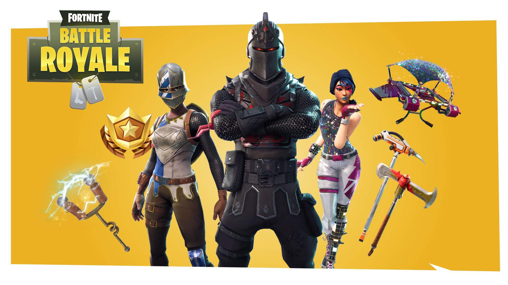
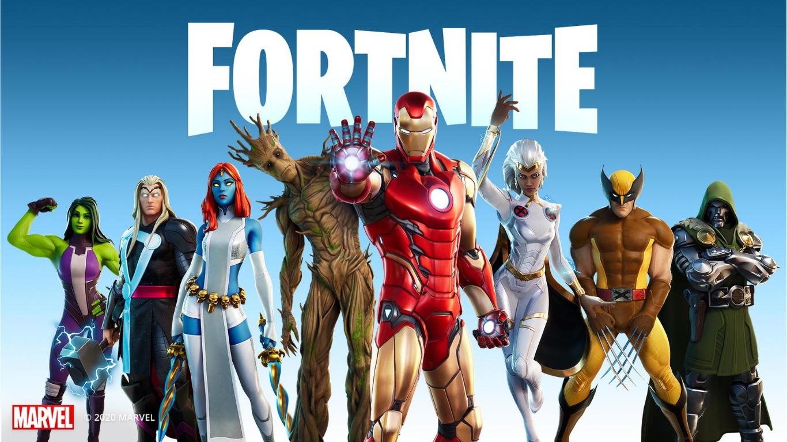

Temporades
Des de l'inici de Fortnite existeixen les temporades, amb una duració de 1 a 3 mesos, cada temporada te canvis, des de nous personatges, noves armes, canvis als mapes, gràfics i canvis en les estadístiques dels objectes.
Aquí una llista de les 5 millors temporades segons la comunitat.
- Capitol 1 Temporada 2
 - Capitol 1 Temporada 4

- Capitol 1 Temporada 7
- Capitol 2 Temporada 2
- Capitol 2 Temporada 4
